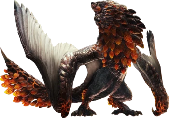
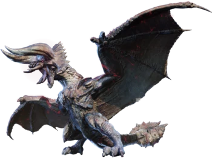
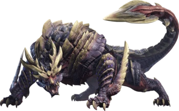
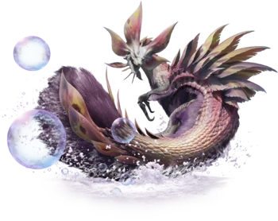
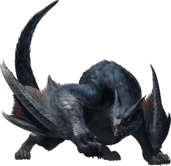
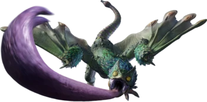
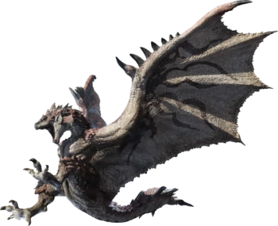
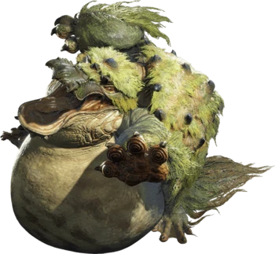
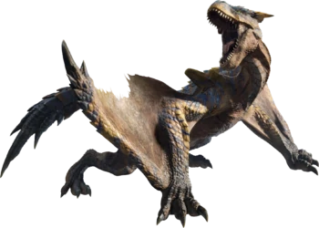
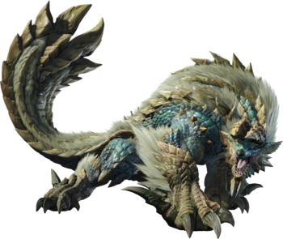

Bazelguese
Bazelgeuse is a large Flying Wyvern covered in thick, heavy scales with
a bronze sheen. It has a bulky upper body and a large wingspan. Its
underside is lined with protruding scales which fall off easily. The
monster occasionally enters a "superheated" state, causing the gaps
between its scales to glow red hot.

Diablos
Diablos are large, bipedal wyverns with powerful armor plating covering
much of their body. Their most noteworthy feature is a pair of massive,
solid bull-like horns above their red eyes. Diablos also possess a pair
of tusk-like fangs and a large, spiny neck frill. Their tail ends with a
heavy, studded club that can be used to ward off attackers. Diablos
stand on a pair of stocky, wide-set legs and possess a broad upper body
complete with thick, muscular wings.

Magnamalo
Magnamalo is a hulking Fanged Wyvern that bears some resemblance to a
tiger. It is primarily clad in purple and yellow plates of armor, with a
red underbelly. The head has a short, tigrine snout, holds two foldable
tusks under its cheeks, and sports a large pair of jagged yellow horns,
just underneath which are its long, thin ears. Both the forelegs and
hindlegs end in four-clawed digits, and each foreleg is armed with a
single large serrated blade, which is kept folded back, parallel with
the leg. Magnamalo's tail ends in a spear-like tip composed of three
spikes that can flex outwards to form a trident shape. Hidden within its
back are a series of bone blades/spikes that spring out from its hide
whenever it becomes enraged.

Mizutsune
Like most other Leviathans, Mizutsune has a long, slender body. However,
it is one of the few Leviathans to actually have fur on its body. This
dark purple fur covers its chest, underbelly, legs and tail. Its scales
are light colored and resemble those of a fish. Its head has a long
snout and is beautifully adorned by many fin-like appendages. These fins
are pink with yellow markings, and they can also be seen on its back and
tail. Its feet are said to be quite different from other Leviathans and
allow Mizutsune to move swiftly on land.

Nargacuga
It has black scales, black fur and nightmarish red eyes, giving it the
look and style of a predatory black panther. Its dark, feral appearance
suggests that it may mainly be a nocturnal predator. This wyvern has
been sighted within the Great Forest at both night and daytime, the
Jungle, and also the Old Swamp. When it's in Rage Mode, its eyes glow
bright red and leave a trail of reddish lines when Nargacuga moves.
Also, its tail erects large spikes which can be flung and linked up with
its attacks for devastating hits. Their vertebrae and tail muscles are
extremely flexible, making the tail of Nargacuga also prehensile. Its
tail is also its most powerful weapon. The scales at the end of the tail
can also be shaken to produce rattling sounds similar to that of a
rattlesnake.

Pukei-Pukei
Pukei-Pukei slightly resembles a chameleon, with a limited
color-shifting capability, and its eyes are similar to frogs. It has a
pair of wings and is covered in green, feather-like scales that vary in
color throughout its body, excluding its underbelly, which is covered in
white osteoderm-like platings. Despite being reptilian in nature,
Pukei-Pukei has vibrant feathers around its neck and wings.

Rathalos
Rathalos are large, bipedal wyverns with a spiny, armored hide covering
their body. Their outer shell features much brighter and more vibrant
colors than that of their female counterpart, the Rathian. It is
primarily bright red, with black markings throughout. Like the Rathian,
Rathalos possess a flame sac which is used to produce deadly flaming
projectiles from the mouth. The talons upon their feet are highly
poisonous and are known to inflict toxic mortal wounds on larger prey.
In addition, their long, thick tail features a heavy spiked club at the
end. Rathalos' wing membranes feature ornate patterns which are likely
used to attract potential mates.

Tetranadon
Tetranadon is an Amphibian with an inflatable belly and a turtle-like
shell on their back. Its belly is capable of inflating to the point of
doubling their original body size. It also has algae-like fur on its
head, front legs, shell, and tail. It has a toothless, platypus-like
beak and webbed feet. Its eyes are orange and have the horizontal pupil
common to amphibians. It also has a crest on their head that looks very
similar to the head dish of the mythological Kappa. When its belly is
not inflated, it walks on all fours; once enough debris is swallowed,
however, its belly inflates to an incredible size, and it starts
standing on its hindlegs.

Tigrex
Tigrex is a large, quadrupedal wyvern characterized by its massive head
and jaws, powerful limbs and striking yellow/blue striped coloration.
The top of its head is tipped with a pair of horn-like ears, and its
segmented tail ends with a spiny protrusion.

Zinogre
Zinogre is a quadrupedal monster with superficially lupine features. It
has highly developed limbs, sharp fangs and claws. Its forelegs are
extremely powerful and can kill prey in one brutal blow. Despite its
hulking size, Zinogre is very agile and is able to perform many
impressive aerial and land-based maneuvers. The spikes on its body
mostly lie flat, but when it has built up an electric charge they stick
out vertically into the air.